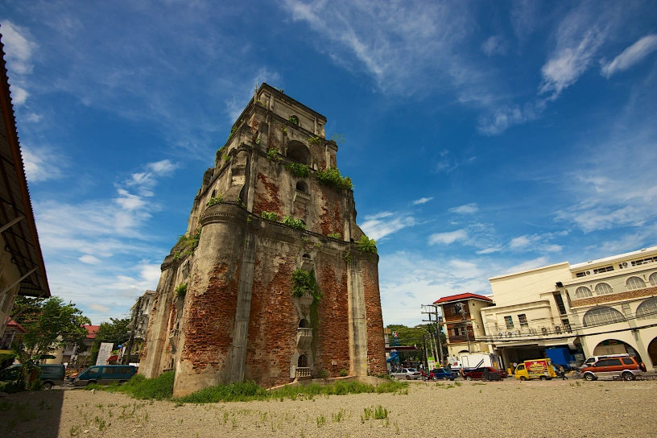

Sinking Bell Tower

The Sinking Bell Tower of Laoag City, Ilocos Norte, captivates visitors with its rich history. Built after the 1707 earthquake, it stands as a symbol of the region's colonial past under Spanish rule. This 150-foot-tall structure, constructed by Ilocano artisans using bricks, molasses, and local plant leaves, is the tallest historic building in Laoag.
One mystery is its location—unlike typical bell towers attached to cathedrals, it stands 80 meters away from St. William’s Cathedral. Despite enduring numerous earthquakes, it’s slowly sinking, believed to be caused by its heavy structure and sandy foundation. In the past, people on horseback could ride through its gates, but today, visitors would need to crouch to enter. Though now off-limits, the tower remains an enduring piece of Laoag's history, even as the city around it modernizes.